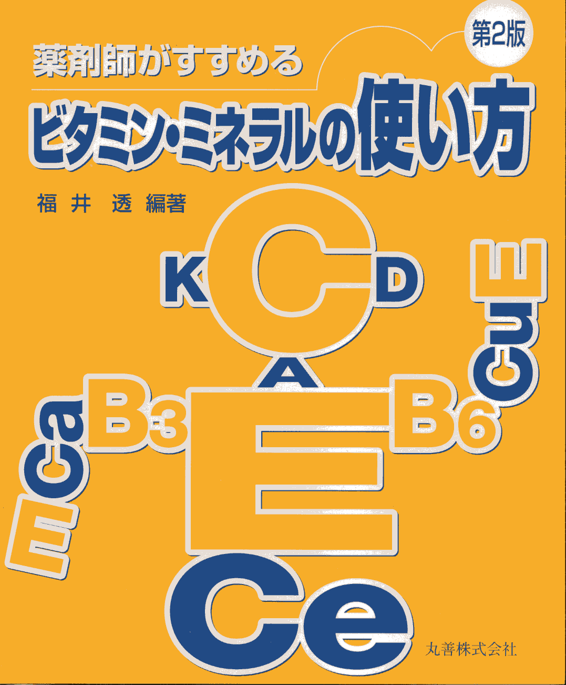
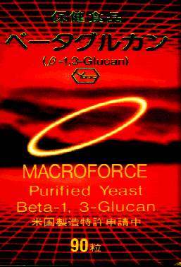

お知らせ(2017.6.25)
事情により、しばらくの間、宅配便のみの販売とさせていただきます。
また、新規のお客様はメールのみとさせていただきます。ただし、従来からのお客様からのご注文は引き続き電話・FAXでも承ります。
ご不便をおかけいたしますが、今後とも当店をよろしくお願いいたします。
主なコンテンツ
 新版 薬剤師がすすめるビタミン・ミネラルのとり方
(→Amazon)
新版 薬剤師がすすめるビタミン・ミネラルのとり方
(→Amazon)
 ○ベータグルカンとは
○ベータグルカンとは
○サプリメントの摂り方
○肌を美しくするケアと栄養

薬剤師がすすめるビタミン・ミネラルの使い方(第2版)
(→Amazon)
○Th1・Th2バランスの図表−Th1を促進、Th2を抑制するには
○所要量、RDA,DV,ODAの比較表
○免疫基本応答の図表
メニュー
- ビタミン・ミネラル
- 健康を維持したり、病気の回復にはなぜビタミン・ミネラルが必要なのでしょうか?
- 体内の代謝の潤滑油 と言われるビタミン・ミネラルの働きとは
- ビタミン、ミネラルの不足症状と、症状改善に選びたい栄養素
- ビタミン、ミネラルの豊富な食品を選ぶ
- ビタミン、ミネラルの不足症状、含有食品グラフなど:
『薬剤師がすすめるビタミン・ミネラルのとり方』(目次、Amazon)に掲載
- サプリメントとして、ビタミンやミネラルを摂りたい症状など:
『薬剤師がすすめるビタミン・ミネラルの使い方(第2版)』(目次、Amazon)に掲載
- ミネラル特集
- お薦めサプリメント
- 体内の活性酸素
- 活性酸素(フリーラジカル)が老化や成人病の原因に?
- フリーラジカル及び活性酸素
- 体内抗酸化物質がなぜ消耗するのか
- 活性酸素の生成と消去の図表
- 分子で示す活性酸素の生成と変換
- 免疫応答
- 免疫とは、免疫を受け持つ細胞
- 血液中の細胞、図表
- 免疫低下の原因、免疫を高めるには
- 免疫の働きとビタミン
- ヘルパーT1とヘルパーT2のバランス
- Th1を高めTh2を抑える図表
- 免疫基本応答の図表
- 免疫応答の図表
- ベータグルカンと免疫細胞及び図表
- ウイルス感染免疫応答の経過図表
- アトピー性皮膚炎
- アトピー性皮膚炎の特徴
- 粘膜と皮膚の不調
- 消化不十分の蛋白質が抗原となりやすい
- 免疫の不調
- マクロファージの活性化
- プロスタグランジンE2を減らす
- プロスタグランジンE3を増やす
- 砂糖を摂りすぎない
- 副腎を強くしましょう
- ヒスタミンを減らしましょう
- アトピー性皮膚炎と免疫応答の図表
|
|
|
 |
新版 薬剤師がすすめるビタミン・ミネラルのとり方
平成22年11月初版
丸善
目次 |
薬剤師がすすめるビタミン・ミネラルの使い方(第2版)
平成13年10月第2版
丸善
目次
|
ベータグルカン
免疫の栄養
酵母食品
30カプセル7500円
100カプセル22500円 |
フォトギャラリー
2006世界らん展
- 日本大賞はマスデバリア
- パフィオペディラム
- カトレア
- リカステ
- 2005世界らん展
- 日本大賞はデンドロビウム
- パフィオペディラム1
- パフィオペディラム2
- パフィオペディラム3
- カトレア1
- カトレア2
- リカステ
- ファレノプシス
- デンドロビウム
- シンビ・マスダ・フラグ
2004世界らん展
- 日本大賞は胡蝶蘭
- カトレア1
- カトレア2
- パフィオペディラム1
- パフィオペディラム2
- ファレノプシス
- デンドロビウム
- リカステ
ぼたん
バラ
日本橋高島屋バラ展
ハワイ旅行、マウイ島、オアフ島
マウイ島カアナパリのサンセット・虹・夕暮れ
オアフ島ハナウマ湾全景
オアフ島ワイキキビーチ・カラカウア通り
マウイ島カアナパリのバス、ホエールビレッジ前
マウイ島植物園バナナの花・しょうがの花
マウイ島水族館えい・熱帯魚
ワイキキビーチとマウイビーチ
 (C)2022 Fukui Pharamacy., (C)2012 福井透(2012/2/12最終更新).
(C)2022 Fukui Pharamacy., (C)2012 福井透(2012/2/12最終更新).